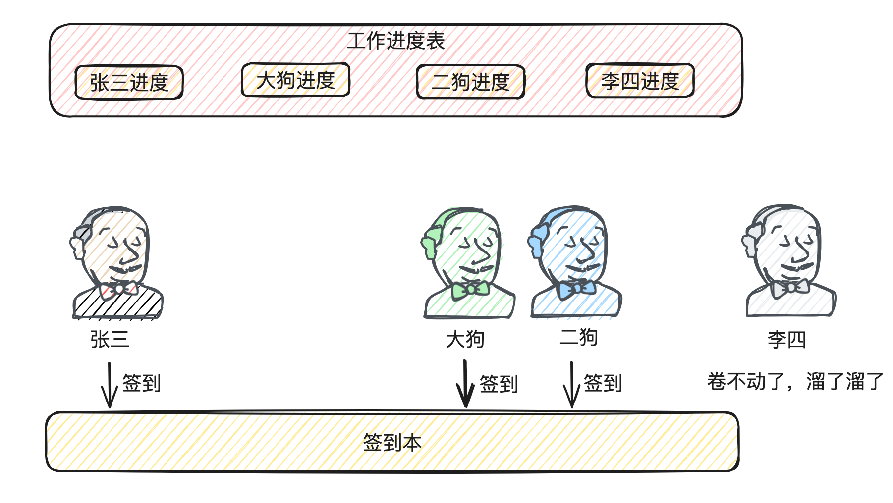
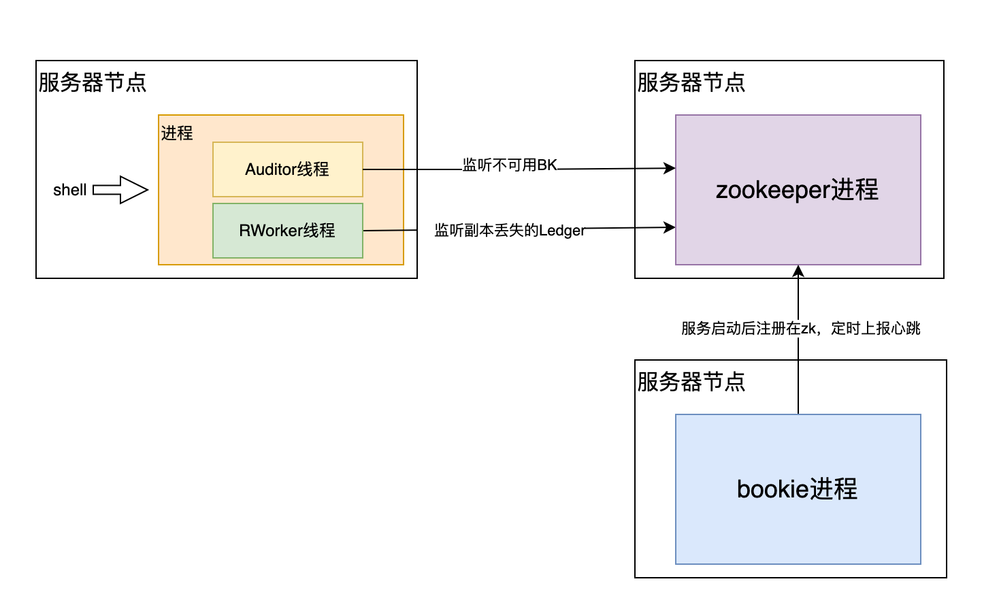

引言小故事
张三在一家小型互联网公司上班，由于公司实行的996，因此经常有同事“不辞而别”，为了工作的正常推进，团队内达成了某种默契，这种默契就是通过某个规则来选出一个同事，这个同事除了工作之余还有额外看看每天是否有同事“不辞而别”，当发现有同事李四离职时，就会去把李四负责的工作的内容进行拆分给其他的同事进行处理。整个过程大致如下图
由上图可以看到这个公司通过一个签到本和工作进度表来完成整个流程，每个同事上班时都要在签到本上进行签到，每天下班前要在工作进度表上同步今天的工作进展；例如今天李四“不辞而别”溜了，张三在签到本上看到李四没有签到记录，就判定这家伙不干了同时在工作进度表中把李四的任务进行拆分给大狗和二狗来做…
通过上面的故事会发现有几个问题
- 张三是通过什么规则被选成“监督者”的？
- 如果张三也不辞而别呢？
- 为啥要通过签到本的方式，而不是张三直接去挨个挨个看？
- ….
咱们可以带着这些种种心里的疑惑看下面的文章，这个故事其实是一个分布式存储组件的雏形，刚刚所讨论的那些问题也是这些组件所会遇到的且大部分都是有解法的，所以咱们接下来就来看看bookkeeper这个分布式存储组件是如何解决上述问题的
bookkeeper基础
“硬件无法保证不故障”，在这个大前提下，所有运行在硬件上的存储组件都一定会做一件很重要的事情，这件事就是数据恢复，要么是在组件内部来做，要么是在组件外部来做。
bk是一个具有容错的分布式存储组件，同一份数据会有多个副本，分别存在多个bookie中来提供容错保证，那么当一台bookie不可用时，其上面保存的数据都少了一个副本，如果不进行数据恢复/复制的话再有其他的bookie不可用就很容易造成数据的丢失。因此bk自身内部提供了数据恢复的机制，今天通篇大论都是围绕bk的这个机制进行展开的
数据恢复一般分为手动和自动，bk同时支持这两种方式，接下来就看看具体怎么操作的
手动恢复
|
|
在执行手动恢复时，会发生以下四个步骤
- 客户端从zookeeper读取Ledger信息
- 根据Ledger信息确定需要做数据复制的Ledger(根据Ledger中存有被哪些bookie存储的元信息来确定)
- 在客户端启动一个做数据恢复的进程，针对需要做数据复制的Ledger进行数据恢复
- 一旦所有Ledger被标记为全副本了，则恢复动作完成
自动恢复
|
|
除了通过指令的方式启动，bk还支持配置的方式，只需要在bookie节点配置autoRecoveryDaemonEnabled为false，这个bookie节点在启动的时候也同样会启动autorecovery服务
autorecovery机制
上一章节讲了怎么使用，本章节主要讲明autorecovery这个机制
自动恢复机制中有两个角色Auditor和replication worker，在启动自动恢复机制后，会在每个bookie实例中启动这两个角色
Auditor
bk集群中的Auditor们会通过zookeeper选举产生一位leader，这个leader负责监听 zookeeper /ledgers/available 节点变化情况来判定是否要做数据恢复动作，因为所有节点启动都会注册在上面，如果有服务不可用由于zookeeper的临时目录机制，会自动删除在此目录下自己节点的信息，因此leader通过watch机制可以轻松感知到有节点不可用，当Auditor leader感知到有节点不可用时，会将此bookie所负责的所有Ledger加在zookeeper /ledgers/underreplicated 路径下，通过这种方式通知replication worker做数据恢复过程
replication worker
每个replication worker都会监听 /ledgers/underreplicated 地址，在监听到有数据恢复任务时，会在 /ledgers/underreplication/locks下添加锁从而避免并发问题；如果在开始恢复前发下当前Ledger的Fragment还处于写入中的状态，replication worker会先尝试等待它写完再做数据恢复动作，但如果等了一段时间还没写完会通过Fence机制处理再做复制，同时开启一个新的Fragment给客户端做数据的继续写入
启动工作流程
参照上图，在服务器节点上执行bin/bookkeeper autorecovery bookie后会发生以下步骤
- 通过exec shell指令调用操作系统拉起AutoRecoveryMain 这个Java进程
- AutoRecoveryMain进程启动时会同时启动Auditor线程和ReplicationWorker线程，由于环境中可能会启动多个AutoRecoveryMain进程来做HA高可用，因此多个Auditor线程会通过zookeeper选举来产生一个Auditor Leader
- 由于bookie集群用zookeeper来做集群感知，因此Auditor Leader只需要通过watch监听zookeeper上 bookie所注册的地址就能感知到是否有bookie节点不可用；当bookie节点不可用时一般就不会上报心跳给zookeeper，zookeeper就会将该节点创建的临时目录进行删除并告知添加watch的Auditor Leader
- Auditor Leader收到通知后会去zookeeper查询该不可用bookie所负责的Ledger列表，理论上这些Ledger都是需要做数据恢复的，因此会将它们放在zookeeper的/ledgers/underreplicated 目录下来通知ReplicationWorker
- ReplicationWorker通过watch监听到此目录有需要做数据恢复的Ledger后，会先在zk加锁再进行数据恢复逻辑；通过将Ledger划分为多个Fragment来轮训进行数据恢复，通过读取其他正常bookie上该Ledger的数据并写到其他没有该数据的bookie的节点上从而保证每份数据都有多个副本，直到将/ledgers/underreplicated 下的所有Ledger进行复制完，本次 autorecovery就算完成了。而Auditor线程和ReplicationWorker线程会不停的监听zookeeper直到下一个bookie节点不可用
通过此机制给bookkeeper提高了稳定性以及高可用能力，在有个别节点挂掉的时候依然能自动做到数据完备不丢，这种设计是一个成熟的组件该具备的能力
autorecovery启动源码
源码主要分 启动流程以及工作流程进行讲解，同时在这里给需要阅读的朋友提供一个可能会用上的“词典”
|
|
从现在开始跟踪启动的源码，在客户端执行 bin/bookkeeper autorecovery bookie 后会走到 bookkeeper/bin/bookkeeper 这个脚本下面的这行逻辑
|
|
逻辑非常清晰，其实就是通过shell启动AutoRecovery 这样一个独立的Java进程，专门负责做故障数据恢复。JVM会从启动类的main方法进行引导执行，因此咱们接下来从AutoRecoveryMain的main方法作为入口来看看后面会发生哪些事情
|
|
通过这里可以发现AutoRecoveryMain的main方法只是做一个引导的动作，最终启动的是AutoRecoveryServer对象。因此让我们深入看看这个服务的构造以及启动的流程
|
|
再看AutoRecoveryService的构造函数
|
|
服务构造的逻辑差不多就跟到这了，我们知道最终是为了创建AuditorElector和ReplicationWorker这两个对象就够了。服务启动这块从上面的 ComponentStarter.startComponent(server).get(); 进行跟踪
|
|
结合上面的可以发现AutoRecovery的启动本质上就是启动AuditorElector和ReplicationWorker这两个服务，因此接下来咱们就来看看这两个服务的start过程，先来看看AuditorElector
|
|
在这里其实就是对Auditor对象进行初始化以及启动，再进一步跟踪
|
|
看完了初始化逻辑，再继续看下Auditor的启动逻辑
|
|
这些就是Auditor启动的逻辑，接下来再看看ReplicationWorker的启动逻辑
|
|
autorecovery工作源码
这块由于逻辑相对较多，因此针对autorecovery工作流程单独开一章。经过上面我们可以清晰的知道在经过启动后都发生了哪些事情，接下来咱们看看autorecovery真正工作的逻辑。在Auditor start的时候，会通过监听zookeeper来感知数据的动态变化
|
|
上述两个唤醒方法主要是通过watch感知zookeeper事件，所以咱们主要看回调类里面的处理逻辑，先看下LostBookieRecoveryDelayChangedCb类
|
|
从ReplicationWorker的rereplicate方法开始就是真正做数据恢复的过程
|
|
继续进一步看admin.replicateLedgerFragment的实现
|
|
到这里数据就发出去了，我们也能知道AutoRecovery进程是通过Netty向BK的服务端进行数据读取，那么服务端在接收到请求后又是怎么处理的呢，这里咱们从服务端接收请求的逻辑开始跟，由于BK本身也是通过Netty实例进行网络请求处理的，因此可以轻松找到BookieRequestHandler的channelRead方法监听外部网络请求
|
|
总结
在这里解答下引言小故事
-
张三是通过什么规则被选成“监督者”的？
张三是通过zookeeper的Paxos算法选举产生的
-
如果张三也不辞而别呢？
大狗和二狗也会通过zookeeper监听张三的状态，如果张三不辞而别的话，大狗二狗会通过zookeeper选举成为新的“监督者”
-
为啥要通过签到本的方式，而不是张三直接去挨个挨个看？
通过签到本的方式比较节约张三的时间，否则当员工比较多的时候并且对感知时间比较快的时候，张三就要每隔几分钟就要跑去挨个挨个看，这样没多久张三也要“不辞而别”了。通过签到本如果某个同事不签到了张三就能很轻松感知到并做相对应的处理了
参考资料
- https://bookkeeper.apache.org/docs/admin/autorecovery/
- bk项目 site3/website/docs/admin/* 指令使用说明